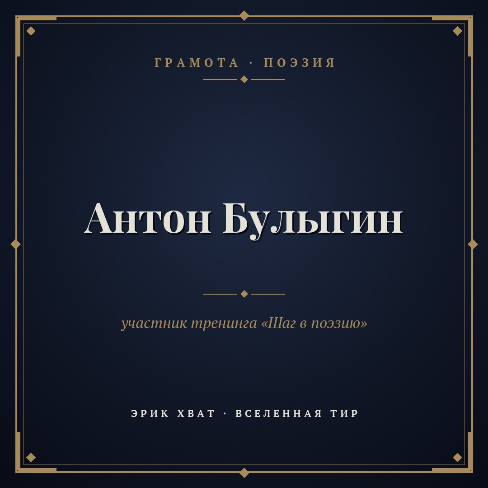

Грамота по поэзии: Антон Булыгин
Сегодня хочу показать грамоту Антон Булыгин, участника тренинга «Шаг в поэзию».
[Две-три фразы: что особенно удалось в его стихах, какое стихотворение запомнилось, как он изменился за время обучения.]
У каждого, кто начинает писать, есть свой первый шаг. Если Вы тоже хотите попробовать, начните с гайда «Создавайте свои стихи»: http://irektuhvatshin.ru/gayd-poeziya.html
Поздравляю, Антон!